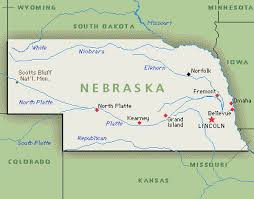

Kate is from a small town in northwestern Nebraska and spent her childhood living on an awesome acreage. Kate had one of the coolest childhoods ever! Her parents are amazing gardeners and lanscapers so their property is beautiful. Kate loves spending time with her parents to continue to develop the land on their beautiful acreage.

Kate has lived and worked in several places. After graduating college Kate moved to Mammoth Lakes, CA to work for the Mammoth Mountain Ski Resort. She worked there for two years in Reservations and then moved to San Diego, CA. San Diego was a lot of fun for Kate. She worked for the Catamaran Resort and Spa Reservations and also Ashford University in Financial Aide. Kate then moved to Honolulu, HI and had a lot of great experiences. Kate worked in landscaping while living in Hawaii. In 2011 Kate moved back to Nebraska and worked in Banking.
Kate attended Chadron State College in western Nebraska and received a Bachelor of Arts in Business Administration and Spanish. Kate attended Chadron State College the same time as Danny Woodhead who now plays for the San Diego Chargers.
Kate studied abroad in Oaxaca, Mexico for a month. Kate's spanish is rusty at this time, due to lack of practice, and hopes to continue advancing towards spanish fluency in 2017. At one point Kate was practicing Spanish enough she had dreams in Spanish, which was pretty exciting!
Kate loves learning new things and is very excited to learn more about programming at CodeCraft School and any other skill she finds interesting from Boulder Digital Arts.
Learn more about Kate's Interests.